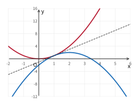

ホーム ＞ 数学II ＞ 微分法（接線・増減・極値）
2つの放物線 \(y=x^2\) と \(y=-x^2+4x-2\) の共通接線の方程式をすべて求めよ。
それぞれの曲線上の接点を文字でおき、接線の傾きと切片が一致する条件を連立。または接線を求めて、もう一方と重解（\(D=0\)）。
\(y=x^2\) の点 \((t,t^2)\) での接線 \(y=2tx-t^2\)。

\(y=-x^2+4x-2\) の点 \(u\) での接線 \(y=(-2u+4)x+u^2-2\)。係数を比べて
\[\text{接線：}\quad y=2 x - 1\]
【答案（テストに書く形）】
答